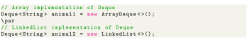

In Java, we must import the java.util.Deque package to use Deque.

Here, we have created objects animal1 and animal2 of classes ArrayDeque and LinkedList, respectively. These objects can use the functionalities of the Deque interface.
Since Deque extends the Queue interface, it inherits all the methods of the Queue interface. Besides methods available in the Queue interface, the Deque interface also includes the following methods:
- addFirst() - Adds the specified element at the beginning of the deque. Throws an exception if the deque is full.
- addLast() - Adds the specified element at the end of the deque. Throws an exception if the deque is full.
- offerFirst() - Adds the specified element at the beginning of the deque. Returns false if the deque is full.
- offerLast() - Adds the specified element at the end of the deque. Returns false if the deque is full.
- getFirst() - Returns the first element of the deque. Throws an exception if the deque is empty.
- getLast() - Returns the last element of the deque. Throws an exception if the deque is empty.
- peekFirst() - Returns the first element of the deque. Returns null if the deque is empty.
- peekLast() - Returns the last element of the deque. Returns null if the deque is empty.
- removeFirst() - Returns and removes the first element of the deque. Throws an exception if the deque is empty.
- removeLast() - Returns and removes the last element of the deque. Throws an exception if the deque is empty.
- pollFirst() - Returns and removes the first element of the deque. Returns null if the deque is empty.
- pollLast() - Returns and removes the last element of the deque. Returns null if the deque is empty.